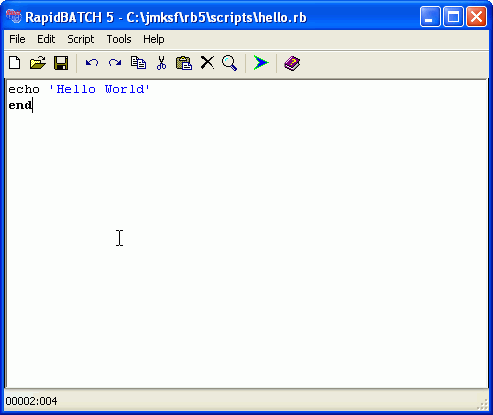
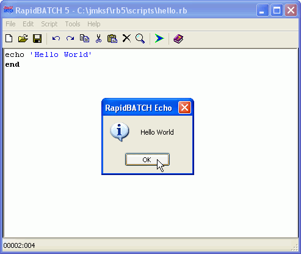
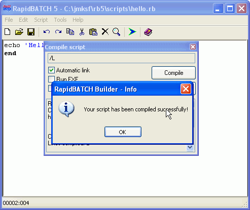

A first, simple script
Already in the preamble of this manual, we presented you a simple script, composed of only two simple lines of code, that should demonstrate the fundamental structure of a program written in the RapidBATCH scripting language:
echo 'Hello World'
end
To run this script, its code first needs to be inputted and saved as a RapidBATCH script-file with the .RB file extension.
To input and edit scripts, I strongly recommend to use the included script-editor RapidBATCH Builder, providing a comfortable environment to edit, run and debug your scripts. You start the Builder over the start menu (Start -> Programs -> RapidBATCH 5.0 Professional Edition/RapidBATCH 5.0 Personal Edition -> RapidBATCH 5.0) or by double-clicking the file RBB4.EXE from the RapidBATCH setup-directory.
After you activated RapidBATCH Builder, insert the above source code.
Inserting the code in the RapidBATCH Builder.
Then, save the script in a directory of your choice under the filename HELLO.RB (or any other desired filename). Now, the script can be executed by pressing F5 or the "Run script" button from the RapidBATCH Builder's toolbar. 
The script is running!
Congratulations to your first, running script in RapidBATCH!
If you're using the RapidBATCH Professional Edition, you can also directly compile your script into a stand-alone .EXE-file that can be executed on any Windows® computer without an installed RapidBATCH scripting platform. To do this, select "Script" and then "Compile" from the menu bar.
Compiling a script into a standalone .EXE-file.
The compiled script will be saved to the same directory as the .RB-file.
Now, after you executed and compiled your script, let's describe the usage and meaning of the source code we entered above. The first instruction, ECHO, displays, as you surely noticed, a text in a messagebox window, in this case "Hello World". The text is specified between singe quotation marks ('...'). These marks need always been set when a value is specified to a function or instruction. In some cases, e.g. also at ECHO, you can omit these quotation marks, which is the old-styled, classic method RapidBATCH supported in the past. This style does not fit to the modern RapidBATCH standard anymore, and is not recommended. In general, you should always set quotation marks when specifying values to write easy-to-read and consistent code.
The END-instruction, following to ECHO in a new line, marks the end of the script. END is also not required, but simply belongs to the script when writing smart, tidy code.
If the instructions and functions you specify are written in upper or lower letters belongs to you. RapidBATCH makes no decisions when you write "ECHO", "EcHo" or "echo". I prefer the lower case order, as it is the case in this example. Blanks can be set everywhere you want for better code readability. The end of the line (means: the line break) automatically marks the end of the instruction, that means you need to insert a new line for each instruction you want to execute.
First of all, before we now really begin to use the mighty functions and nearly endless possibilities RapidBATCH provides, I want to suggest you to the use of comments. Comments can be seen as notes in the code of your script, describing the usage of several operations or function calls your program performs. This possibility enables automatically a form of documentation for your script, if for yourself, other developers or maybe the script's users, to understand and follow the steps you made when solving your software problems without only reading tons of code. This does not mean that you always NEED to comment each line of code in your script, but sometimes, a comment is very use- and helpful. From now, I will comment all locations in the examples I demonstrate you where I think that a comment fits and is helpful.
To define a comment in a RapidBATCH script, use the REM-instruction. This instruction marks a comment in the code. The comment applies until the next line begins.
Here, a commented version of our "Hello World" script:
rem display Hello World
echo 'Hello World'
rem end of the script
end
Please note, that comments can not be inserted behind instructions, because REM is a RapidBATCH instruction like ECHO or any other one, and must be specified in a single line.
And now, let's begin with the RapidBATCH programming tutorial.
If you are not that familiar with the use of the RapidBATCH Builder yet, just try out all its functions before you continue, because the following pages are not discussing the usage of the easily useable RapidBATCH Builder anymore.
Copyright © 2000-2006 by J.M.K S.F. Software Technologies, Jan Max Meyer
All rights reserved.